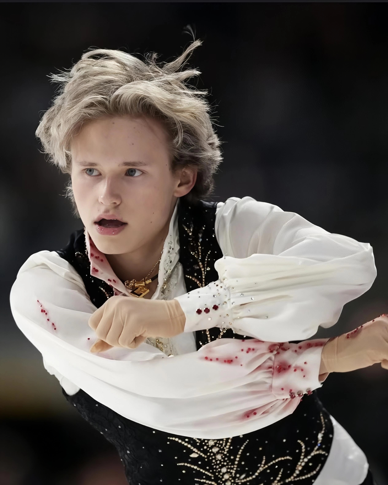
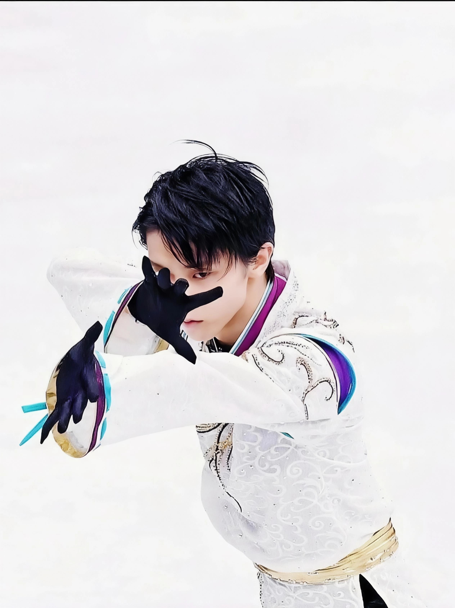
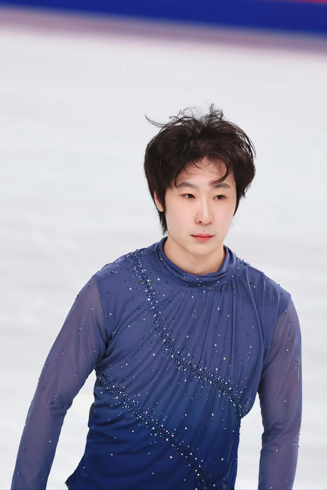
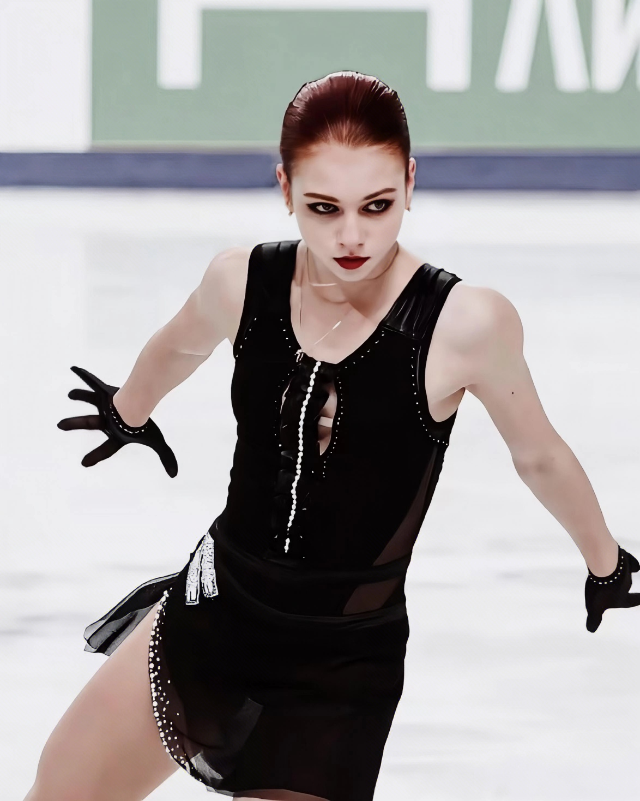
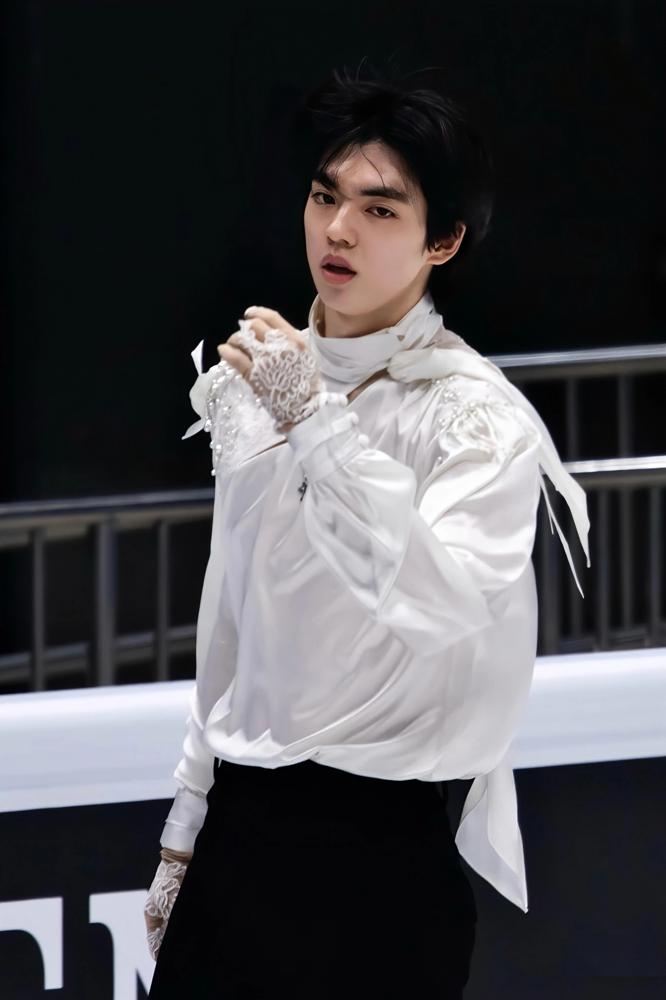
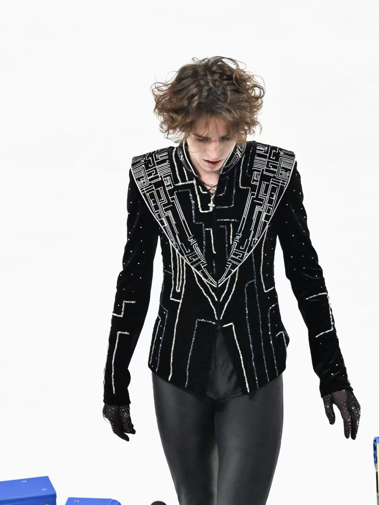

花样滑冰选手简介，来了解一些知名选手吧！

伊利亚·马里宁 Ilia MALININ
男，21岁，美国选手，在役
花名：00、QuadG0d（四周跳之神）、马琳琳
马里宁是世界上第一个也是目前唯一一个可以在一套自由滑节目中完成7个四周跳且无失误的选手。在2025-2026赛季，他除了米兰冬奥会男子单人滑个人赛获得第8名，其余所有国际赛事（包括米兰冬奥会花滑团体赛）均获得冠军，堪称史无前例的天才。

羽生结弦 Yuzuru HANYU
男，32岁，日本选手，退役
花名：柚子、牛哥
羽生结弦是花滑界公认的GOAT，是花样滑冰历史上首位包揽奥运会、世锦赛、大奖赛总决赛、四大洲锦标赛及世青赛等所有大型国际赛事的男单冠军的选手，职业生涯中19次打破世界纪录，且是世界上第一个完成后外结环四周跳（4Lo）的选手。他是历史上唯一一位连续两届冬奥会都获得冠军的选手。在2022北京冬奥会中，他极具艺术性及高难度的节目使得他被称赞为为“他就是花样滑冰本身”。

金博洋 Boyang Jin
男，29岁，中国选手，在役
花名：天天
金博洋是目前中国拥有技术难度最高的选手。他曾在2016年和2018年获得世锦赛铜牌，创造中国男子单人滑选手在世锦赛上获得的最好成绩，同时于2018年加入“300分俱乐部”，同年在四大洲花样滑冰锦标赛获得冠军。他是世界上首位做出勾手四周跳接后外点冰三周跳（4Lz+3T）的选手，被日本名将羽生结弦评价为“开创了当今世界男子滑坛全新的四周跳时代”。

亚历山德拉·特鲁索娃 Alexandra TRUSOVA
女，22岁，俄罗斯选手，退役
花名：莎莎
特鲁索娃是花样滑冰史上首位将女子单人滑带图四周跳时代的开拓者，也是唯一能在正式比赛中完成四种不同的四周跳并在同一套节目中完成五个四周跳且不失误的选手。2019年大奖赛加拿大站技术分突破100分，2022年冬奥会创下106.16分的奥运技术分记录，并获得女单自由滑排名世界第一。她的存在证明了女子花滑不止有柔美，更有力量与极限，感谢了女子花滑的历史高度。

车俊焕 Junhwan CHA
男，25岁，韩国选手，在役
花名：车车
车俊焕是韩国花样滑冰绝对领军选手，曾10次获得国内冠军。2018年首次获得大奖赛总决赛铜牌，创造韩国男单花滑历史，2022年获得四大洲锦标赛冠军，2022年冬奥会排名第五，2023年世锦赛获得银牌，2025年获亚冬会冠军，2026年米兰冬奥会排名第四，仅与铜牌差0.98分。车俊焕最受欢迎的是他极为英俊的外表和自如的表现力，以高颜值、稳定技术及综艺感著称，他的比赛出片没有一张是不好看的。（此男也是家妹最喜欢的选手。）

米哈伊尔·沙依多罗夫 Mikhail Shaidorov
男，22岁，哈萨克斯坦选手，在役
花名：傻朵
米哈伊尔是哈萨克斯坦继丹尼斯·谭后又一位新星，在2026年米兰冬奥会以291.58分夺得男子单人滑个人赛冠军。他曾在2025年3月获得世锦赛亚军，2026年3月再次获得世锦赛亚军。他是世界上首位在正式比赛中完成阿克塞尔三周接后外点冰四周跳、阿克塞尔三周接欧拉跳接后内结环四周跳的选手。他在多次采访中表达对熊猫的喜爱，并多次在表演滑中身披龙袍化身“功夫熊猫”，冬奥会夺冠后在社交平台开玩笑说这是“熊猫的力量”。